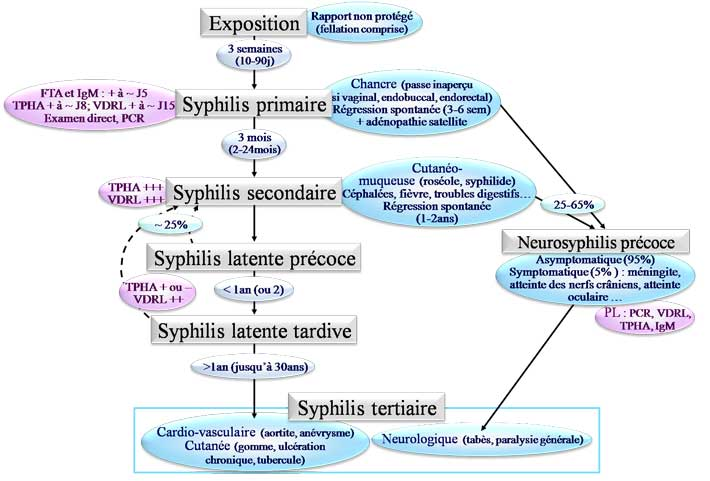
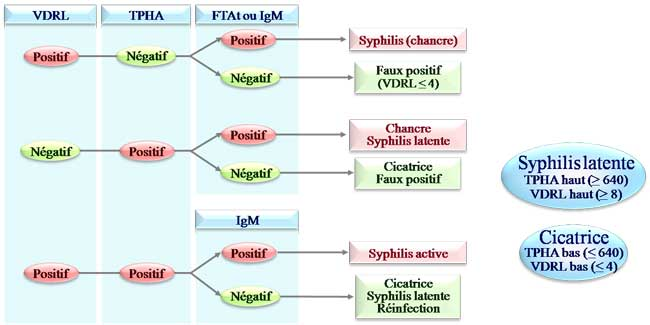

Treponema pallidum : bactérie mobile appartenant au groupe des spirochètes (bactéries spiralées)
Pathogène strictement humain, non cultivable
Réémergence des cas de syphilis en France : 455 nouveaux cas en 2006 contre 37 nouveaux cas en 2000.
Moyenne d’âge : 35 ans
Principalement sexuelle : ~60% des partenaires développent une infection dans les 30j suivant le rapport contaùinant (le sujet est contagieux pendant la 1ère voire les 2 1ères années de la maladie correspondant aux stades primaire et secondaire)
Touche plus souvent les hommes (95%), les homosexuels (80%), les sujets infectés par le VIH (58% : atteinte syphilitique plus grave : chancres multiples, extensifs, atteinte ophtalmique, risque de neurosyphilis très important …).
La syphilis augmente le risque de transmission du VIH.

Autre forme de syphilis : syphilis congénitale
Transmission à partir du 4ème mois de grossesse (70% de transmission en cas de syphilis précoce, 10% en cas de syphilis tardive) → mort in utero, avortement, manifestations cutanéo-muqueuses, viscérales, séquelles sensorielles, retard mental …
Le dépistage de la syphilis acquise concerne les sujets à risque.
- Hommes ayant des rapports sexuels non protégés avec des hommes, fellation comprise.
- Travailleurs du sexe ayant des rapports non protégés.
- Personnes ayant des rapports non protégés avec des travailleurs du sexe.
- Personnes ayant des antécédents ou une infection active à telle que gonococcie, lymphogranulomatose vénérienne ou infection par le Virus de l’Immunodéficience Humaine (VIH).
- Personnes ayant des rapports non protégés avec plusieurs partenaires par an.
- Migrants en provenance de pays d’endémie (Afrique, Asie, Europe de l’Est, Amérique du Sud).
- Personnes incarcérées.
- Victimes de viols.
Un dépistage systématique est réalisé lors d'un don de sang.
En cas de prise de risque récurrente, il faut réaliser un dépistage 1 fois par an.
- Dépister toutes les femmes enceintes lors du 1er examen prénatal
- Renouveler le dépistage au 3ème trimestre si la femme ou son conjoint ont eu des rapports sexuels non protégés avec un nouveau partenaire après le 1er dépistage
- Dépister autour de l’accouchement si cela n’a pas été fait avant
- Vérifier la présence d’une sérologie syphilitique dans le dossier obstétrical avant le départ de la maternité
- Dépister les femmes ayant des antécédents de fausse-couche spontanée ou d’enfant mort-né
Prélèvement : au niveau du chancre ou des lésions secondaires cutanéo-muqueuses
Nettoyer les lésions avec du sérum physiologique stérile et gratter le fond du chancre au vaccinostyle (en évitant de faire saigner)
Observer rapidement entre lame et lamelle au microscope à fond noir
Faux positifs : présence de tréponèmes saprophytes.
Augmentation de la sensibilité et de la spécificité par des techniques d’immunofluorescence directe
Intérêt dans les lésions cutanéo-muqueuses précoces de localisation atypique (lésions buccale et anale), dans les syphilis congénitales (liquide amniotique), dans la neurosyphilis (LCR : résultats inconstants)

Aucun test sérologique ne permet de différencier la syphilis des autres tréponématoses.
Nomenclature : 1 réaction cardiolipidique (VDRL)
+ 1 réaction tréponémique (TPHA, FTA-Abs, ELISA)
Agglutination des réaginines syphilitiques en présence d’un Ag cardiolipidique (Ag RPR) complexé à des particules de charbon
- Positif 10 à 20j après apparition du chancre
- Permet suivi sérologique après traitement
- Faux positifs : PR, LES, MNI, paludisme, grossesse, hépatite virale, cirrhose, SAPL …
- Faux négatifs : phénomène de zone (excès d’Ac)
Agglutination d’hématies sensibilisées par des antigènes de T. pallidum (réaction rendue plus spécifique par une adsorption des Ac du sérum avec des tréponèmes saprophytes)
- Sensible et spécifique sauf aux stades précoces
- 8ème j du chancre, reste positif longtemps
- Faux positifs : MNI, MAI, grossesse
- Faux négatifs : phénomène de zone, syphilis très précoce
Immunofluorescence indirecte après adsorption du sérum sur des tréponèmes saprophytes
- Positif à partir du 5ème jour du chancre
- Faux positifs : réactions croisées avec autres spirochétoses et maladies auto-immunes.
Elle peut présenter un intérêt en phase précoce de syphilis primaire, en cas de recontamination, de syphilis congénitale ou de neurosyphilis.
Les IgM diminuent rapidement après traitement.
L’intérêt est d’essayer de définir des profils protéiques spécifiques des différentes phases de la maladie.
LCR : PCR et sérologie : TPHA (très sensible mais non spécifique d'une atteinte du système nerveux), VDRL (un VDRL positif affirme presque toujours une neurosyphilis). La présence d’IgM est en faveur d’une neurosyphilis.
Sérologie chez l’enfant :
-
IgM
-
VDRL > 4 fois le taux de la mère
-
ascension des Ac sur 2 sérums successifs
Extencilline® 1 injection IM (alternatives : Doxycycline, Tétracycline, Azithromycine, Ceftriaxone).
Surveillance sérologique du VDRL à 1, 3, 6, 12, 24 mois.
Efficacité thérapeutique : mise en évidence par
- une diminution du VDRL de 2 dilutions en 3 mois ou de 3 dilutions en 6 mois
- une négativation des IgM dans les 3-9 mois (parfois jusqu’à 18 mois)
En cas de traitement précoce, il n’y a pas de cicatrice sérologique.
Neurosyphilis : vérification du LCR tous les 3 mois jusqu’à normalisation.
Education de la population
Utilisation du préservatif
Dépistage des groupes à risque (+ dépistage systématique des femmes enceintes)
Traitement curatif des sujets atteints et traitement prophylactique des partenaires (Pénicilline G)